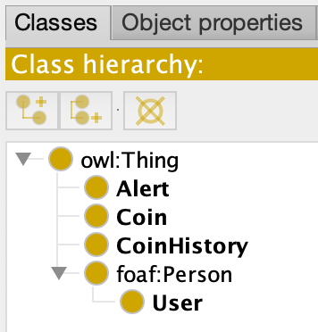

CRYS - cryptocurrency smart manager
Abstract
Cryptocurrencies are systems that allow for the secure payments online which are denominated in terms of virtual "tokens," which are represented by ledger entries internal to the system. "Crypto" refers to the various encryption algorithms and cryptographic techniques that safeguard these entries, such as elliptical curve encryption, public-private key pairs, and hashing functions.
When cryptocurrency is used to pay for goods or services, each transaction is securely encrypted and recorded in a public ledger called a blockchain. The blockchain ensures a cryptocurrency’s integrity and eliminates the need for a central administrator, such as a treasury or a central bank. Cryptocurrency users connect directly to each other in peer-to-peer transactions, with a degree of anonymity provided by the blockchain ledger. A cryptocurrency wallet is used to store various kinds of cryptocurrency. The first decentralized cryptocurrency, bitcoin, was created in 2009 by pseudonymous developer Satoshi Nakamoto. It used SHA-256, a cryptographic hash function, as its proof-of-work scheme. In April 2011, Namecoin was created as an attempt at forming a decentralized DNS, which would make internet censorship very difficult. Soon after, in October 2011, Litecoin was released. It was the first successful cryptocurrency to use scrypt as its hash function instead of SHA-256.Our solution
CryS aims to express and manage the knowledge about existing cryptocurrencies and their meta-data by showing the current value and of each altcoin, price history and the news related to the crypto-market.
Our web application will have the following main functionalities:- Real time market data about cryptocurrencies
- Cryptocurrency evolution history
- User personalized alerts for coins of interest
- Quick view of favourite user coins
- Quick view of user alerts set for different cryptocurrencies
Also, it is meant to offer a scalable solution of obtaining and analysing cryptocurrency in real time. Our solution will collect data from two APIs and by transforming the data into a common format(RDF) it will be able to present to the client the information exposed by a well documented RESTful API.
Technologies
The technologies we'll be using in this project are :
-
Back-end
- Java - a general-purpose computer programming language that is concurrent, class-based, object-oriented and specifically designed to have as few implementation dependencies as possible.
- Spring Boot - makes it easy to create stand-alone, production-grade Spring based Applications that you can "just run".
- Spring Security - Spring Security is a powerful and highly customizable authentication and access-control framework. It is the de-facto standard for securing Spring-based applications.
- Java Quartz - can be used to create simple or complex schedules for executing tens, hundreds, or even tens-of-thousands of jobs; jobs whose tasks are defined as standard Java components that may execute virtually anything you may program them to do.
- JavaX Mail - The JavaMail API provides a platform-independent and protocol-independent framework to build mail and messaging applications.
- Apache Jena - a free and open source Java framework for building Semantic Web and Linked Data applications.
- SPARQL - is a query language for RDF, it can be used to express queries across diverse data sources, whether the data is stored natively as RDF or viewed as RDF via middleware
- Front-end
Architecture
Our real time stream processing architecture is typically made of the following main components:

Our system collects data from two different APIs:
- Coincap - a useful tool for real-time pricing and market activity for over 1,000 cryptocurrencies. By collecting exchange data from thousands of markets, we are able to offer transparent and accurate data on asset price and availability.
- CryptoControl - allows users to use a powerful news engine with more than 5,000 articles daily from over 1000+ news sources. It uses a specialized AI to understand context of each article and attribute coins and categories to each article.
After we have the relevant information about cryptocurrencies we transform it into RDF format and we query it for providing the functionalities of our application.
The application at the architectural level works very simply using the client-server paradigm.
At the front-end level, several Angular components are used that render HTML pages to dynamically display information about cryptocurrencies.
On the back-end side, a REST API is created using Spring Boot. Each request sent by the client reaches the server controllers and is processed according to the details it provides. Here we find a multi-layer architecture:
- Controller - takes the request from the client together with the payload and sends the data to the next layer
- Service - retrieves data from the controller or Quartz jobs to process the data and then send it to the repository
- Repository - retrieves data from the service and performs CRUD operations on RDF database.
Data collection involves defining a Java Quartz scheduler that is triggered every 30 seconds to collect cryptocurrency data. Once brought from the external API (CoinCap) these are entered in the RDF from where they will be retrieved later using SPARQL queries to send to the client.
To collect data about the currency history, the same steps are used, but the scheduler is activated every 60 minutes.
Another Quartz scheduler handles sending emails to users who have set alarms. This scheduler is triggered every 30 seconds and acts in 3 simple steps:
- Retrieves from the database only users who have email notifications enabled
- For each user takes over the set alarms
- If the alarm is valid (ie meets the conditions) then an email is sent to the user
- Remove the alert from database
When the user wants to create an alarm, he is asked to enter a value that represents the price of the currency when he wants to receive notification for that currency. On the back-end side, in service, an "operator" is established for the alarm. It can receive the following values depending on the value set by the user and the current price of the currency:
- -1: if the value of the alarm is less than the price of the coin
- 0: if the value of the alarm is equal to the price of the coin
- 1: if the value of the alarm is higher than the price of the coin
Thus, when verifying whether a certain alarm should be triggered (ie to send notification to the user), the following scenarios are taken into account:
- The value of the alert is -1, then the price of the coin must be less than the value of the alarm
- The value of the alert is 1, then the price of the coin must be higher than the value of the alarm
Example:
Alert value: $1000
Price value: $1250
Then the operator is: -1
In acest caz ne putem da seama ca utilizatorul doreste sa stie cand pretul monedei este sub $1000.
In terms of security, Spring Security is used to secure endpoints and protect them from being accessed by other domains. To authenticate and authorize the user, a token is generated when the user logs into the application. This token is valid for a period of 24 hours and must be included in each request made by the customer.
Also, the user's password is encrypted using BCrypt when data is entered into the database when a new user is created.
RDF Ontology
At the database level, RDF-type ontologies are used to express individuals for the base entities used by the application for optimal operation. So, we defined a series of classes, data properties and object properties.
|  |  |
 |
Classes:
- User: is a class that defines the basic properties of an application user. Considering that this is a person, a well-known source called FOAF (an acronym of friend of a friend) was used. Thus, User is a subclass of Foaf: Person and contains the following properties:
- foaf:firstName: describe the user's first name
- foaf:lastName: describe the user's last name
- foaf:email: describe the user's email address
- foaf:telephone: describe the user's phone number
- crys:password: describe the user's password. It is a string resulted after the BCrypt hashing algorithm was applied on password provided by the user
- crys:emailNotification: it is a boolean value and is set by user to receive email alerts or not
- Coin: is a class that defines a cryptocurrency. It is a proposed vocabulary used defined for CRYS application and contains the following properties:
- crys:name: describe the name of the coin
- crys:rank: it is an integer value and describe the rank of the coin
- crys:symbol: describe the symbol of the coin (e.g. BTC, ETH, etc.)
- crys:logoUrl: contains a URL with the logo of the coin
- crys:supply: describe the available supply for trading
- crys:maxSupply: describe the total quantity of asset issued
- crys:marketCapUsd: describe the supply x price
- crys:volumeUsd24hr: describe the quantity of trading volume represented in USD over the last 24 hours
- crys:priceUsd: describe the volume-weighted price based on real-time market data, translated to USD
- crys:changePercent24Hr: describe the direction and value change in the last 24 hours
- crys:vwap24Hr: describe the Volume Weighted Average Price in the last 24 hours
- CoinHistory: is a class that defines some historical market cap snapshots of cryptocurrencies. It has the follwing properties:
- crys:priceUsd: contains the price of the coin at a certain time
- crys:timestamp: the timestamp when the coin reached the priced described before
- Alert: is a class that defines an alert created by the user to receive email and/or application notifications when a certain coin has the price set by him. It has the following properties:
- crys:value: describe the price when the alert should be triggered
- crys:operator: describes the value of the alert against the price of the currency at the time the alert is created (-1: value is lower than price, 0: value is equals with the price, 1: value is bigger than price)
Below we can analyze the RDF ontology defined for the CRYS application:

REST api
The UI communicates with the backend via HTTPS for the live stream and REST for the information heavy operations, such as the coin meta-data view.
Such an endpoint converts the Apache Jena format into a UI friendly format, json.
Several endoints such as this exist.
-
/api/user
- POST "/login" - retrieve user details.
{ "id": "89755268-104f-11ea-8d71-362b9e155667", "firstName": "Daniel", "lastName": "Oana", "email": "daniel.oana26@gmail.com", "phone": "0756784385", "email_notifications": false, "token": " "eyJhbGciOiJIUzI1NiIsInR5cCI6IkpXVCJ9eyJpc3MiOiJ0b3B0YWwuY29tIiwiZXhwIjoxNDI2NDIAwLCJodHRwOi8vdG9wdGFsLmNvbS9qd3RfY2xhaW1zL2lzX2FkbWluIjp0cnVlLCJjb21wYW55IjoiVG9wdGFsIiwiYXdlc29tZSI6dHJ1ZX0.yRQYnWzskCZUxPwaQupWkiUzKELZ49eM7oWxAQK_ZXw" } - POST "/register" - create a new resource that represent a user
- PUT "/details" - update user details
- GET"/" - retrieve info about all coins from the system
- GET"/{id}" - retrieve details about a cryptocurrency by given id
{
"id": "bitcoin",
"name": "Bitcoin",
"rank": 1,
"symbol": "BTC",
"supply": 17193925,
"maxSupply": 21000000,
"market_cap_usd": 119179791817.67401,
"volume_usd_24hr": 2928356777.6066666,
"price_usd": 36946.505855566662,
"change_percentage_24hr": -0.8101417214350335,
"vwap_24hr": "7175.0663247679233209s"
}
[
{
"id": "5732b26c-4e98-41d4-aaa8-9079cad5e2ed",
"coinId": "bitcoin",
"priceUsd": "6379.3997635993342453",
"time": 1530403200000
},
{
"id": "7eb09332-baea-4f86-8f35-45307e350bcc",
"coinId": "bitcoin",
"priceUsd": "6466.3135622762295280",
"time": 1530489600000
},
{
"id": "2f48b395-d9b0-4e47-be5e-15b9d25dd5c8",
"coinId": "bitcoin",
"priceUsd": "6601.0724971279524219",
"time": 1530576000000
}
... more data
]
-
/api/favorite
- GET"/{userId}}" - retrieve all favorite coins for a user
[ { "id": "bitcoin", "name": "Bitcoin", "rank": 1, "symbol": "BTC", "supply": 17193925, "maxSupply": 21000000, "market_cap_usd": 119179791817.67401, "volume_usd_24hr": 2928356777.6066666, "price_usd": 36946.505855566662, "change_percentage_24hr": -0.8101417214350335, "vwap_24hr": "7175.0663247679233209s" }, ...more data ] - POST "/favorite/add" - create a new resource that suggest a coin is favorite for a user
- POST "/favorite/remove" - remove such a resource
-
/api/alert
- GET"/{userId}}" - retrieve all alerts for a user
[ { "id": "0d316193-62cd-452c-9fef-64c71956a15e", "userId": "5732b26c-4e98-41d4-aaa8-9079cad5e2ed", "coinId": "bitcoin", "value": "34524.3847", "operator": "-1", }, ...more data ] - GET"/trigger/{userId}}" - get a list of alerts that should be triggered. The result is the same as /api/alert/{userId}
- POST "/alert" - create a new alert
- DELETE "/alert/remove/{id}" - remove an alert
SPARQL Queries
The application uses a series of queries to perform SELECT, UPDATE and DELETE operations in the database. This is what SPARQL is used for, a language able to retrieve and manipulate data stored in RDF.
The APache Jena API was used to insert the data, which allows the creation of resources and their introduction in the dataset.
Examples:
- Insert user in database:
dataset.begin(ReadWrite.WRITE);
Model userModel = dataset.getDefaultModel();
Resource userResource = userModel.createResource(CRYS_URI + "user-" + user.getUuid());
userResource.addProperty(CRYS.type, userModel.createResource(CRYS.CRYS_URI + "User"));
userResource.addProperty(FOAF.firstName, user.getFirstName());
userResource.addProperty(FOAF.lastName, user.getLastName());
userResource.addProperty(FOAF.email, user.getEmail());
userResource.addProperty(FOAF.telephone, user.getTelephone());
userResource.addProperty(CRYS.password, user.getPassword());
userResource.addProperty(CRYS.emailNotification, user.isEmailNotification() ? "true" : "false");
dataset.addNamedModel(USER_URI + "user-" + user.getUuid(), userModel);
dataset.commit();
dataset.end();
- Retrive coin ordered ascendent by rank:
PREFIX crys:
PREFIX coin:
PREFIX foaf:
PREFIX rdf:
PREFIX xsd:
SELECT *
WHERE {
?coin rdf:type crys:Coin ;
crys:id ?id ;
crys:name ?name ;
crys:rank ?rank ;
crys:symbol ?symbol ;
crys:logoUrl ?logoUrl ;
crys:supply ?supply ;
crys:maxSupply ?maxSupply ;
crys:marketCapUsd ?marketCapUsd ;
crys:volumeUsd24hr ?volumeUsd24hr ;
crys:priceUsd ?priceUsd ;
crys:changePercentage24hr ?changePercentage24hr ;
crys:vwap24hr ?vwap24hr ;
}
ORDER BY xsd:integer(replace(?rank, ' ', ''))
- Update coin
PREFIX crys:
PREFIX rdf:
PREFIX coin:
DELETE {
?coin crys:priceUsd ?priceUsd ;
crys:rank ?rank ;
crys:symbol ?symbol ;
crys:supply ?supply ;
crys:maxSupply ?maxSupply ;
crys:marketCapUsd ?marketCapUsd ;
crys:volumeUsd24hr ?volumeUsd24hr ;
crys:changePercentage24hr ?changePercentage24hr ;
crys:vwap24hr ?vwap24hr ;
}
INSERT {
?coin crys:priceUsd \%1s\ ;
crys:rank \%2s\ ;
crys:symbol \%3s\ ;
crys:supply \%4s\ ;
crys:maxSupply \%5s\ ;
crys:marketCapUsd \%6s\ ;
crys:volumeUsd24hr \%7s\ ;
crys:changePercentage24hr \%8s\ ;
crys:vwap24hr \%9s\ ;
}
WHERE
{ ?coin crys:id \%10s\ ;
crys:priceUsd ?priceUsd ;
crys:rank ?rank ;
crys:symbol ?symbol ;
crys:supply ?supply ;
crys:maxSupply ?maxSupply ;
crys:marketCapUsd ?marketCapUsd ;
crys:volumeUsd24hr ?volumeUsd24hr ;
crys:changePercentage24hr ?changePercentage24hr ;
crys:vwap24hr ?vwap24hr ;
}
- Delete alert by user ID and coin ID
PREFIX crys:
PREFIX rdf:
DELETE {
?alert rdf:type crys:Alert ;
crys:value ?value ;
crys:operator ?operator ;
crys:belongsTo \%1s\ ;
crys:forCoin \%2s\;
}
WHERE {
?alert rdf:type crys:Alert ;
crys:value ?value ;
crys:operator ?operator ;
crys:belongsTo \%3s\ ;
crys:forCoin \%4s\ ;
}
You can check more SPARQL queries on GitHub repository.
References
Cryptominded - a curated directory of the best cryptocurrency resources.